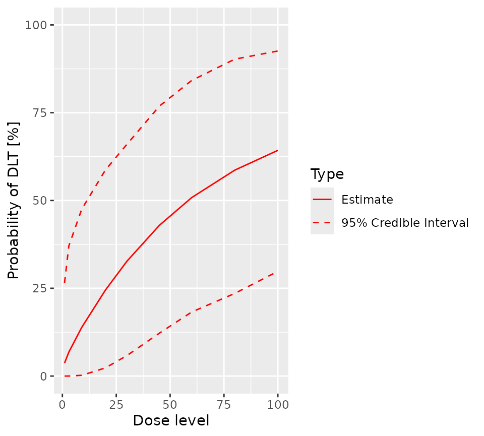
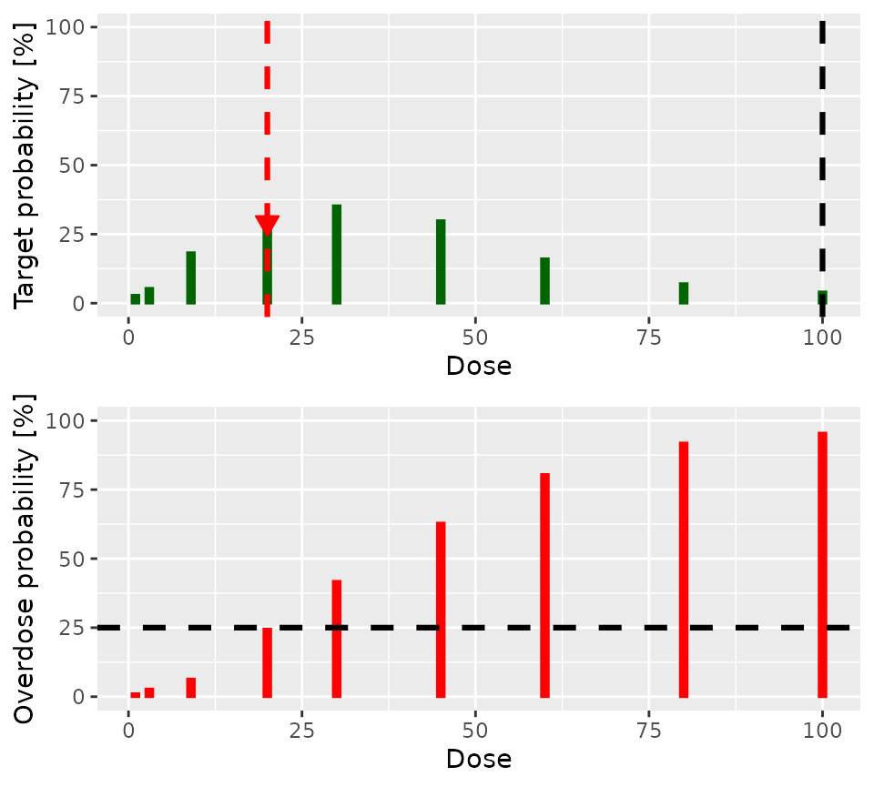
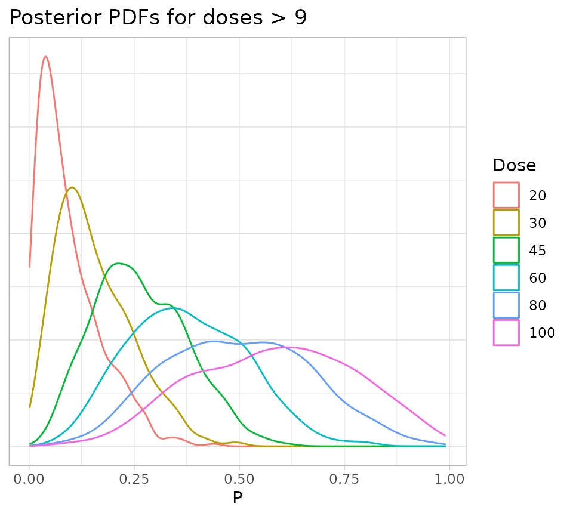
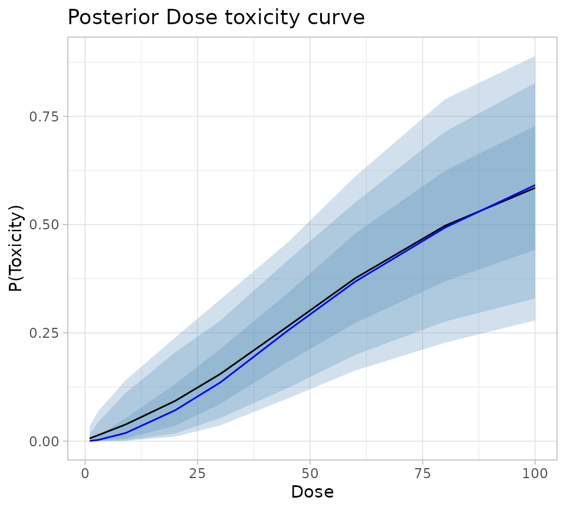

Introduction
This vignette picks up where the previous one (Trial Definition), ends. To recap, our trial defines the six fundamental elements of a CRM trial as
The dose grid
The trial will use a dose grid consisting of the following doses: 1, 3, 9, 20, 30, 45, 60, 80 and 100. The units in which doses are defined is irrelevant to the operation of the CRM.
The dose-toxicity model
The trial uses a logistic log Normal dose toxicity model
\[ log(\frac{p_i}{1 - p_i}) = \alpha + \beta log(d_i / d^*) \]
where the prior joint distribution of \(\alpha\) and \(\beta\) is
\[ \begin{bmatrix} \alpha \\ log(\beta) \end{bmatrix} \sim N\begin{pmatrix} \begin{bmatrix} -0.85\\0 \end{bmatrix} , \begin{bmatrix} 1 & -0.5 \\ -0.5 & 1 \end{bmatrix} \end{pmatrix}. \]
The increment rule
The maximum increment for doses greater than 0 and less
than 20 is 100 x (1 + 1)%, or 200% of the highest dose used
so far, whereas for 20 or more, the maximum increment is
100 x (1 + 0.5)%, or 150% of the highest dose used so far.
Note that a 2-fold increment corresponds to a 3-fold escalation.
The dose selection rule
Here, we choose to use Neuenschwander’s rule (Neuenschwander, Branson, and Gsponer 2008), in which the dose for the next cohort to be the dose (amongst those doses that are eligible for selection according to the escalation rule) that has the highest posterior chance of having a probability of toxicity in the target range - here [0.2, 0.35) - provided that the dose’s chance of having a probability in the overdose range - here [0.35, 1.0] - is less than 0.25.
The cohort size
Whilst the dose for the next cohort is 20 or less and no DLTs have been observed, the minimum cohort size is 1. Otherwise, it is 3.
The stopping rule
The trial will stop when either
- Twenty patients have been recruited, or.
- Both of the following conditions are true
- At least three cohorts must have been treated AND
- The probability that the current estimate of the MTD is in the target toxicity range must be at least 0.5.
Trial definition
The code to define these elements of the trial design is given in the Trial Definition vignette.
Analysing a trial
Given the trial design constructed above, the process of analysing a real life instance of the trial is simply a matter of providing the model with the actual toxicity status of the participants treated so far. The escalation rules we defined earlier allow the use of a single patient run-in until either the first DLT is observed or until dose 20 has been administered.
The single patient run-in
Assume that the first three patients - dosed at 1,
3 and 5 - completed the trial without
incident, but that the fourth patient - treated at 10 -
experienced a DLT.
We provide this information to crmPack via a
Data object:
firstFour <- Data(
x = c(1, 3, 9, 20),
y = c(0, 0, 0, 1),
ID = 1:4,
cohort = 1:4,
doseGrid = doseGrid
)Within a Data object, the doses at which each patient is
treated are given by the x slot and their toxicity status
(a Boolean where a toxicity is represented by a truthy value) by the
y slot.
The observed data is easily visualised
plot(firstFour)and, since the plot method returns a ggplot
object, it is easily customised.
plot(firstFour) + theme_light()Now, update the model to obtain the posterior estimate of the dose-toxicity curve:
vignetteMcmcOptions <- McmcOptions(burnin = 100, step = 2, samples = 1000)
postSamples <- mcmc(
data = firstFour,
model = model,
options = vignetteMcmcOptions
)The posterior estimate of the dose toxicity curve is easily visualised:
plot(postSamples, model, firstFour)
A visual representation of the model’s state is obtained with:
nextBest(
my_next_best,
doselimit = 100,
samples = postSamples,
model = model,
data = empty_data
)$plot
The lower panel of the plot shows the posterior probability that each
dose is in the overdose range. The dashed horizontal black line shows
the acceptable risk of overdose: Doses with red lines which go above
this line are considered toxic. The upper panel shows the probability
that each dose is in the target toxicity range. Clearly, doses of
30 and 45 have the highest probability of
being in the target toxicity range. However, the risk that both are in
the overdose range is unacceptable. Therefore, 20 is the
dose recommended for the next cohort.
We can produce a tabulation of the model state with
tabulatePosterior <- function(mcmcSamples, observedData) {
as_tibble(
nextBest(
my_next_best,
doselimit = 100,
samples = mcmcSamples,
model = model,
data = observedData
)$probs
) %>%
left_join(
tibble(
dose = observedData@x,
WithDLT = observedData@y
) %>%
group_by(dose) %>%
summarise(
Treated = n(),
WithDLT = sum(WithDLT),
.groups = "drop"
),
by = "dose"
) %>%
replace_na(list(Treated = 0, WithDLT = 0)) %>%
select(dose, Treated, WithDLT, target, overdose) %>%
kableExtra::kable(
col.names = c("Dose", "Treated", "With DLT", "Target range", "Overdose range"),
digits = c(0, 0, 0, 3, 3)
) %>%
kableExtra::add_header_above(c(" " = 1, "Participants" = 2, "Probability that dose is in " = 2))
}
tabulatePosterior(postSamples, firstFour)| Dose | Treated | With DLT | Target range | Overdose range |
|---|---|---|---|---|
| 1 | 1 | 0 | 0.028 | 0.010 |
| 3 | 1 | 0 | 0.079 | 0.027 |
| 9 | 1 | 0 | 0.197 | 0.092 |
| 20 | 1 | 1 | 0.279 | 0.295 |
| 30 | 0 | 0 | 0.243 | 0.492 |
| 45 | 0 | 0 | 0.199 | 0.675 |
| 60 | 0 | 0 | 0.152 | 0.811 |
| 80 | 0 | 0 | 0.077 | 0.905 |
| 100 | 0 | 0 | 0.065 | 0.929 |
From these presentations, we can see that:
- The highest dose so far administered is
20, so the escalation rule permits doses up to and including40to be considered as the dose for the next cohort. However… - Doses of
30and above are considered unsafe - Of the remaining doses,
20has the highest posterior probability of being in the target toxicity range - A DLT has been reported
Items 1 and 4 in the list tell us both that the size of the next
cohort should be three. Items 2 and 3 together imply that the highest
dose that can be used in the next cohort is 20.
Thus, the model’s recommendation is that the next cohort should
consist of three patients, each treated at 20. This can be
confirmed programmatically:
nextMaxDose <- maxDose(my_increments, firstFour)
nextMaxDose
#> [1] 40
doseRecommendation <- nextBest(
my_next_best,
doselimit = nextMaxDose,
samples = postSamples,
model = model,
data = firstFour
)
doseRecommendation$value
#> [1] 9However, given that the probability that 20 is in the
overdose range is only just less than the threshold of 0.25 (and because
the only participant so far treated at 20 experienced a
DLT) it would be a perfectly reasonable clinical decision to treat the
next cohort at 10 - or, indeed, at any other dose below
20. There is absolutely no obligation to follow the CRM
dose recommendation without consideration of other factors that might
affect the choice of the most appropriate dose for the next cohort.
However, for the purpose of exposition, we will treat the next cohort at
20, as recommended by the model.
We can confirm that the trial’s stopping rules have not been satisfied:
stopTrial(
my_stopping,
dose = doseRecommendation$value,
postSamples,
model,
firstFour
)
#> [1] FALSE
#> attr(,"message")
#> attr(,"message")[[1]]
#> attr(,"message")[[1]][[1]]
#> [1] "Number of cohorts is 4 and thus reached the prespecified minimum number 3"
#>
#> attr(,"message")[[1]][[2]]
#> [1] "Probability for target toxicity is 20 % for dose 9 and thus below the required 50 %"
#>
#>
#> attr(,"message")[[2]]
#> [1] "Number of patients is 4 and thus below the prespecified minimum number 20"
#>
#> attr(,"individual")
#> attr(,"individual")[[1]]
#> [1] FALSE
#> attr(,"message")
#> attr(,"message")[[1]]
#> [1] "Number of cohorts is 4 and thus reached the prespecified minimum number 3"
#>
#> attr(,"message")[[2]]
#> [1] "Probability for target toxicity is 20 % for dose 9 and thus below the required 50 %"
#>
#> attr(,"individual")
#> attr(,"individual")[[1]]
#> [1] TRUE
#> attr(,"message")
#> [1] "Number of cohorts is 4 and thus reached the prespecified minimum number 3"
#> attr(,"report_label")
#> [1] NA
#>
#> attr(,"individual")[[2]]
#> [1] FALSE
#> attr(,"message")
#> [1] "Probability for target toxicity is 20 % for dose 9 and thus below the required 50 %"
#> attr(,"report_label")
#> [1] NA
#>
#> attr(,"report_label")
#> [1] NA
#>
#> attr(,"individual")[[2]]
#> [1] FALSE
#> attr(,"message")
#> [1] "Number of patients is 4 and thus below the prespecified minimum number 20"
#> attr(,"report_label")
#> [1] NA
#>
#> attr(,"report_label")
#> [1] NAThe first full cohort
Assume that none of the three patients in the first full cohort report a DLT:
firstFullCohort <- Data(
x = c(1, 3, 9, 20, 20, 20, 20),
y = c(0, 0, 0, 1, 0, 0, 0),
ID = 1:7,
cohort = c(1:4, rep(5, 3)),
doseGrid = doseGrid
)Update the model:
postSamples1 <- mcmc(
data = firstFullCohort,
model = model,
options = vignetteMcmcOptions
)Tabulate the posterior:
tabulatePosterior(postSamples1, firstFullCohort)| Dose | Treated | With DLT | Target range | Overdose range |
|---|---|---|---|---|
| 1 | 1 | 0 | 0.010 | 0.001 |
| 3 | 1 | 0 | 0.019 | 0.005 |
| 9 | 1 | 0 | 0.074 | 0.021 |
| 20 | 4 | 1 | 0.274 | 0.078 |
| 30 | 0 | 0 | 0.397 | 0.211 |
| 45 | 0 | 0 | 0.354 | 0.512 |
| 60 | 0 | 0 | 0.187 | 0.764 |
| 80 | 0 | 0 | 0.097 | 0.892 |
| 100 | 0 | 0 | 0.063 | 0.930 |
Should the trial stop? If not, what dose should be used for the next cohort?
nextMaxDose <- maxDose(my_increments, firstFullCohort)
nextMaxDose
#> [1] 40
doseRecommendation <- nextBest(
my_next_best,
doselimit = nextMaxDose,
samples = postSamples1,
model = model,
data = firstFullCohort
)
doseRecommendation$value
#> [1] 30
x <- stopTrial(
my_stopping,
dose = doseRecommendation$value,
postSamples1,
model,
firstFullCohort
)
attributes(x) <- NULL
x
#> [1] FALSESo the trial should continue, treating three patients in the next
cohort at 30.
The second full cohort
Assume that none of the three patients in the next cohort report a DLT:
secondFullCohort <- Data(
x = c(1, 3, 9, 20, 20, 20, 20, 30, 30, 30),
y = c(0, 0, 0, 1, 0, 0, 0, 0, 0, 0),
ID = 1:10,
cohort = c(1:4, rep(5, 3), rep(6, 3)),
doseGrid = doseGrid
)Update the model:
postSamples2 <- mcmc(
data = secondFullCohort,
model = model,
options = vignetteMcmcOptions
)Tabulate the posterior:
tabulatePosterior(postSamples2, secondFullCohort)| Dose | Treated | With DLT | Target range | Overdose range |
|---|---|---|---|---|
| 1 | 1 | 0 | 0.003 | 0.000 |
| 3 | 1 | 0 | 0.004 | 0.000 |
| 9 | 1 | 0 | 0.032 | 0.001 |
| 20 | 4 | 1 | 0.165 | 0.024 |
| 30 | 3 | 0 | 0.276 | 0.103 |
| 45 | 0 | 0 | 0.382 | 0.339 |
| 60 | 0 | 0 | 0.313 | 0.584 |
| 80 | 0 | 0 | 0.189 | 0.788 |
| 100 | 0 | 0 | 0.120 | 0.870 |
The dose with the highest posterior probability of being in the
target toxicity range is now 45, but this dose also has an
unacceptably high probability of being in the overdose range. Therefore,
the trial should continue and the next cohort should be treated at
30:
nextMaxDose <- maxDose(my_increments, secondFullCohort)
nextMaxDose
#> [1] 45
doseRecommendation <- nextBest(
my_next_best,
doselimit = nextMaxDose,
samples = postSamples2,
model = model,
data = secondFullCohort
)
doseRecommendation$value
#> [1] 30
x <- stopTrial(
my_stopping,
dose = doseRecommendation$value,
postSamples2,
model,
secondFullCohort
)
attributes(x) <- NULL
x
#> [1] FALSEThe third full cohort
Assume that none of the three patients in the third cohort report a DLT:
thirdFullCohort <- Data(
x = c(1, 3, 9, rep(20, 4), rep(30, 6)),
y = c(0, 0, 0, 1, rep(0, 9)),
ID = 1:13,
cohort = c(1:4, rep(5, 3), rep(6, 3), rep(7, 3)),
doseGrid = doseGrid
)Update the model:
postSamples3 <- mcmc(
data = thirdFullCohort,
model = model,
options = vignetteMcmcOptions
)Tabulate the posterior:
tabulatePosterior(postSamples3, thirdFullCohort)| Dose | Treated | With DLT | Target range | Overdose range |
|---|---|---|---|---|
| 1 | 1 | 0 | 0.002 | 0.000 |
| 3 | 1 | 0 | 0.001 | 0.001 |
| 9 | 1 | 0 | 0.011 | 0.001 |
| 20 | 4 | 1 | 0.063 | 0.002 |
| 30 | 6 | 0 | 0.209 | 0.030 |
| 45 | 0 | 0 | 0.436 | 0.170 |
| 60 | 0 | 0 | 0.411 | 0.436 |
| 80 | 0 | 0 | 0.221 | 0.717 |
| 100 | 0 | 0 | 0.123 | 0.841 |
45 is still the dose with the highest posterior
probability of being in the target toxicity range, and its probability
of being in the overdose range is now acceptable. Therefore, the trial
should continue and the next cohort should be treated at
45:
nextMaxDose <- maxDose(my_increments, thirdFullCohort)
nextMaxDose
#> [1] 45
doseRecommendation <- nextBest(
my_next_best,
doselimit = nextMaxDose,
samples = postSamples3,
model = model,
data = thirdFullCohort
)
doseRecommendation$value
#> [1] 45
x <- stopTrial(
my_stopping,
dose = doseRecommendation$value,
postSamples3,
model,
thirdFullCohort
)
attributes(x) <- NULL
x
#> [1] FALSEThe fourth full cohort
Assume that none of the three patients in the fourth cohort report a DLT:
fourthFullCohort <- Data(
x = c(1, 3, 9, rep(20, 4), rep(30, 6), rep(45, 3)),
y = c(0, 0, 0, 1, rep(0, 12)),
ID = 1:16,
cohort = c(1:4, rep(5:8, each = 3)),
doseGrid = doseGrid
)Update the model:
postSamples4 <- mcmc(
data = fourthFullCohort,
model = model,
options = vignetteMcmcOptions
)Tabulate the posterior:
tabulatePosterior(postSamples4, fourthFullCohort)| Dose | Treated | With DLT | Target range | Overdose range |
|---|---|---|---|---|
| 1 | 1 | 0 | 0.000 | 0.000 |
| 3 | 1 | 0 | 0.000 | 0.000 |
| 9 | 1 | 0 | 0.000 | 0.000 |
| 20 | 4 | 1 | 0.031 | 0.000 |
| 30 | 6 | 0 | 0.128 | 0.010 |
| 45 | 3 | 0 | 0.367 | 0.088 |
| 60 | 0 | 0 | 0.430 | 0.352 |
| 80 | 0 | 0 | 0.234 | 0.665 |
| 100 | 0 | 0 | 0.163 | 0.784 |
60 is now the dose with the highest posterior
probability of being in the target toxicity range, but its probability
of being in the overdose range is unacceptable. Therefore, the trial
should continue and the next cohort should be treated at
45:
nextMaxDose <- maxDose(my_increments, fourthFullCohort)
nextMaxDose
#> [1] 67.5
doseRecommendation <- nextBest(
my_next_best,
doselimit = nextMaxDose,
samples = postSamples4,
model = model,
data = fourthFullCohort
)
doseRecommendation$value
#> [1] 45
x <- stopTrial(
my_stopping,
dose = doseRecommendation$value,
postSamples4,
model,
fourthFullCohort
)
attributes(x) <- NULL
x
#> [1] FALSEThe fifth full cohort
Assume that two of the three patients in the fourth cohort report a DLT:
fifthFullCohort <- Data(
x = c(1, 3, 9, rep(20, 4), rep(30, 6), rep(45, 6)),
y = c(0, 0, 0, 1, rep(0, 13), 1, 1),
ID = 1:19,
cohort = c(1:4, rep(5:9, each = 3)),
doseGrid = doseGrid
)Update the model:
postSamples5 <- mcmc(
data = fifthFullCohort,
model = model,
options = vignetteMcmcOptions
)Tabulate the posterior:
tabulatePosterior(postSamples5, fifthFullCohort)| Dose | Treated | With DLT | Target range | Overdose range |
|---|---|---|---|---|
| 1 | 1 | 0 | 0.004 | 0.000 |
| 3 | 1 | 0 | 0.006 | 0.000 |
| 9 | 1 | 0 | 0.021 | 0.001 |
| 20 | 4 | 1 | 0.099 | 0.006 |
| 30 | 6 | 0 | 0.290 | 0.027 |
| 45 | 6 | 2 | 0.533 | 0.243 |
| 60 | 0 | 0 | 0.339 | 0.605 |
| 80 | 0 | 0 | 0.153 | 0.829 |
| 100 | 0 | 0 | 0.087 | 0.906 |
45 remains the dose with the highest posterior
probability of being in the target toxicity range, and its probability
of being in the overdose range is acceptable. Moreover, the probability
that 45 is in the target toxicity range is above 0.5 and
more than three cohorts have been treated in total. Therefore, the trial
should stop and conclude that 45 is the MTD:
nextMaxDose <- maxDose(my_increments, fifthFullCohort)
nextMaxDose
#> [1] 67.5
doseRecommendation <- nextBest(
my_next_best,
doselimit = nextMaxDose,
samples = postSamples5,
model = model,
data = fifthFullCohort
)
doseRecommendation$value
#> [1] 45
x <- stopTrial(
my_stopping,
dose = doseRecommendation$value,
postSamples5,
model,
fifthFullCohort
)
x
#> [1] TRUE
#> attr(,"message")
#> attr(,"message")[[1]]
#> attr(,"message")[[1]][[1]]
#> [1] "Number of cohorts is 9 and thus reached the prespecified minimum number 3"
#>
#> attr(,"message")[[1]][[2]]
#> [1] "Probability for target toxicity is 53 % for dose 45 and thus above the required 50 %"
#>
#>
#> attr(,"message")[[2]]
#> [1] "Number of patients is 19 and thus below the prespecified minimum number 20"
#>
#> attr(,"individual")
#> attr(,"individual")[[1]]
#> [1] TRUE
#> attr(,"message")
#> attr(,"message")[[1]]
#> [1] "Number of cohorts is 9 and thus reached the prespecified minimum number 3"
#>
#> attr(,"message")[[2]]
#> [1] "Probability for target toxicity is 53 % for dose 45 and thus above the required 50 %"
#>
#> attr(,"individual")
#> attr(,"individual")[[1]]
#> [1] TRUE
#> attr(,"message")
#> [1] "Number of cohorts is 9 and thus reached the prespecified minimum number 3"
#> attr(,"report_label")
#> [1] NA
#>
#> attr(,"individual")[[2]]
#> [1] TRUE
#> attr(,"message")
#> [1] "Probability for target toxicity is 53 % for dose 45 and thus above the required 50 %"
#> attr(,"report_label")
#> [1] NA
#>
#> attr(,"report_label")
#> [1] NA
#>
#> attr(,"individual")[[2]]
#> [1] FALSE
#> attr(,"message")
#> [1] "Number of patients is 19 and thus below the prespecified minimum number 20"
#> attr(,"report_label")
#> [1] NA
#>
#> attr(,"report_label")
#> [1] NASummarising the trial results
crmPack provides a wealth of information about the trial’s results. The following code snippets illustrate some of the many possibilities for how the trial might be summarised.
plot(fifthFullCohort)
plot(postSamples5, model, fifthFullCohort)
doseRecommendation$plot
With a little bit of work, we can obtain a more detailed summary and plot of the posterior probabilities of toxicity at each dose:
slotNames(model)
#> [1] "params" "ref_dose" "datamodel" "priormodel"
#> [5] "modelspecs" "init" "datanames" "datanames_prior"
#> [9] "sample"
fullSamples <- tibble(
Alpha = postSamples5@data$alpha0,
Beta = postSamples5@data$alpha1
) %>%
expand(nesting(Alpha, Beta), Dose = doseGrid) %>%
rowwise() %>%
mutate(P = probFunction(model, alpha0 = Alpha, alpha1 = Beta)(dose = Dose)) %>%
ungroup()
fullSummary <- fullSamples %>%
group_by(Dose) %>%
summarise(
Mean = mean(P),
Median = median(P),
Q = list(quantile(P, probs = c(0.05, 0.1, 0.25, 0.75, 0.9, 0.95), na.rm = TRUE))
) %>%
unnest_wider(
col = Q,
names_repair = function(.x) {
ifelse(
str_detect(.x, "\\d+%"),
sprintf("Q%02.0f", as.numeric(str_remove_all(.x, "%"))),
.x
)
}
)
#> Warning in sprintf("Q%02.0f", as.numeric(str_remove_all(.x, "%"))): NAs
#> introduced by coercion
fullSummary %>%
kableExtra::kable(
col.names = c("Dose", "Mean", "Median", "5th", "10th", "25th", "75th", "90th", "95th"),
digits = c(0, rep(3, 8))
) %>%
add_header_above(c(" " = 3, "Quantiles" = 6)) %>%
add_header_above(c(" " = 1, "P(Toxicity)" = 8))| Dose | Mean | Median | 5th | 10th | 25th | 75th | 90th | 95th |
|---|---|---|---|---|---|---|---|---|
| 1 | 0.010 | 0.001 | 0.000 | 0.000 | 0.000 | 0.008 | 0.029 | 0.046 |
| 3 | 0.020 | 0.004 | 0.000 | 0.000 | 0.000 | 0.022 | 0.064 | 0.089 |
| 9 | 0.048 | 0.025 | 0.000 | 0.001 | 0.005 | 0.072 | 0.122 | 0.168 |
| 20 | 0.105 | 0.087 | 0.008 | 0.012 | 0.036 | 0.151 | 0.229 | 0.258 |
| 30 | 0.167 | 0.152 | 0.036 | 0.051 | 0.090 | 0.233 | 0.301 | 0.346 |
| 45 | 0.279 | 0.263 | 0.113 | 0.142 | 0.194 | 0.359 | 0.438 | 0.481 |
| 60 | 0.394 | 0.372 | 0.189 | 0.219 | 0.286 | 0.490 | 0.596 | 0.657 |
| 80 | 0.514 | 0.500 | 0.237 | 0.278 | 0.376 | 0.647 | 0.769 | 0.837 |
| 100 | 0.597 | 0.594 | 0.277 | 0.323 | 0.442 | 0.757 | 0.875 | 0.920 |
fullSamples %>%
filter(Dose > 9) %>%
ggplot() +
geom_density(aes(x = P, color = as.factor(Dose))) +
theme_light() +
theme(
axis.text.y = element_blank(),
axis.title.y = element_blank(),
axis.ticks.y = element_blank()
) +
labs(
title = "Posterior PDFs for doses > 9",
colour = "Dose"
)
fullSummary %>%
ggplot(aes(x = Dose)) +
geom_ribbon(aes(ymin = Q05, ymax = Q95), fill = "steelblue", alpha = 0.25) +
geom_ribbon(aes(ymin = Q10, ymax = Q90), fill = "steelblue", alpha = 0.25) +
geom_ribbon(aes(ymin = Q25, ymax = Q75), fill = "steelblue", alpha = 0.25) +
geom_line(aes(y = Mean), colour = "black") +
geom_line(aes(y = Median), colour = "blue") +
theme_light() +
labs(
title = "Posterior Dose toxicity curve",
colour = "Dose",
y = "P(Toxicity)"
)